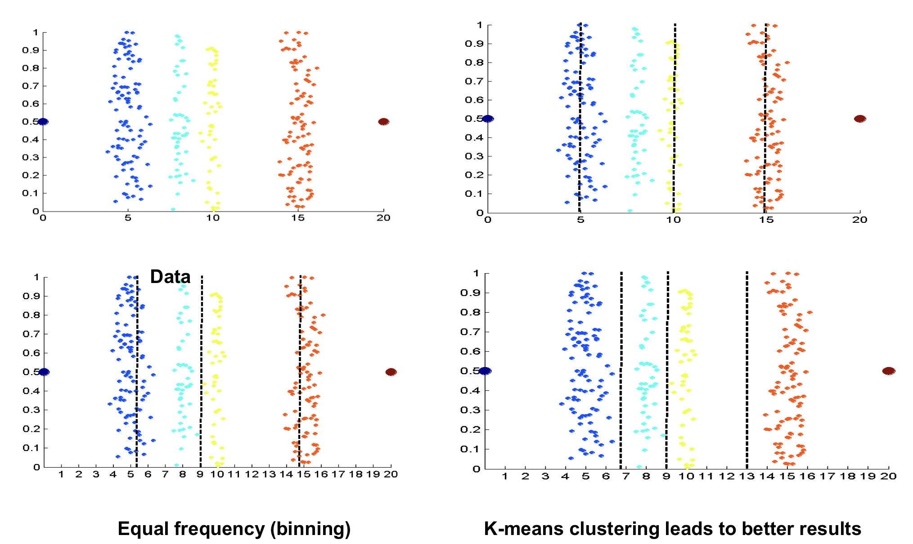
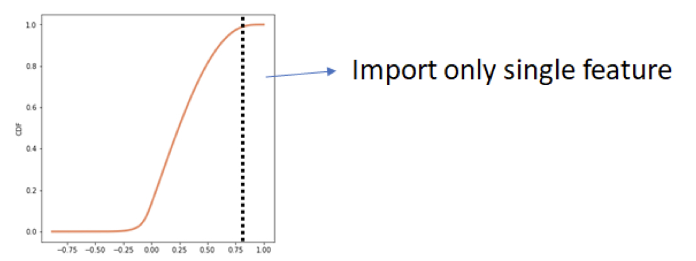
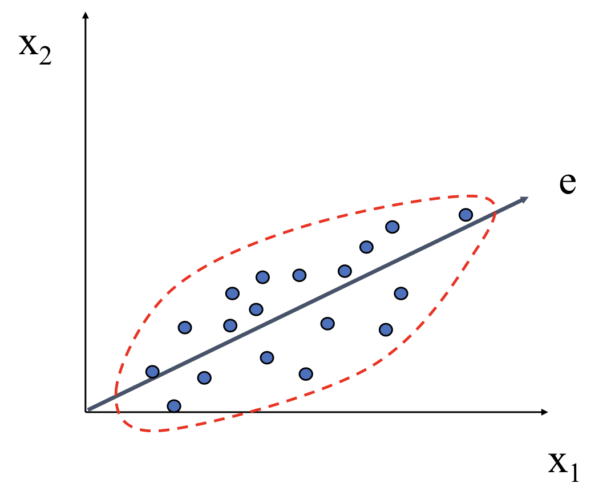
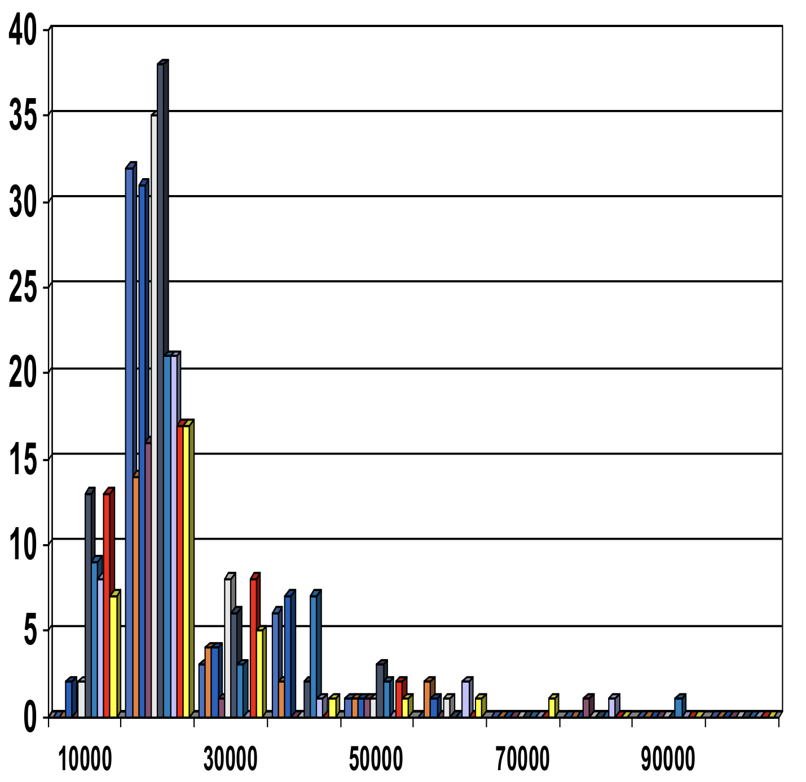
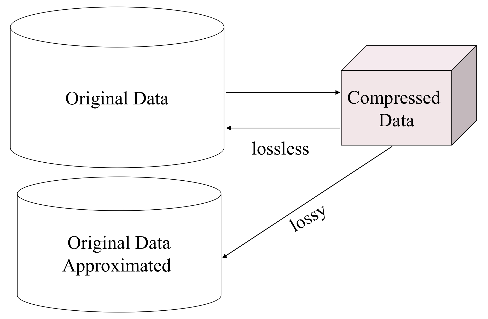

Big Data - Data Collection and Exploration
Data Collection
Considerations
- Does the dataset exist (or can we build the dataset)?
- If it DOES NOT EXIST, the DM problem you defined cannot be conducted.
- If it DOES EXIST, specify the target data source with considering
- Availability (i.e., permission)
- Access type (API, download, …) -> Need to find “limits or warnings”
- Decide the scale of the dataset and what to store
- Reasonable amount to solve your problem
- Storage capability
- Decide the collection methodology
- Crawling web pages or using APIs
- Multiprocessing vs. single processing
Tip ❗️
Collection data as much as you can store
- Re-collection is too much expensive
- Nobody (even you) knows what to use
- During analysis, you may need new data that you ignored
Case Study: Reddit Crawling
Official API is provided through https://www.reddit.com/dev/api/
Note ❗️
It is written that only last 1000 items (i.e. comments are accessible)
Investigation on Rules

Data Preprocessing
Overview
- The first step to ensure “data quality”
- Accuracy: correct or wrong, accurate or not
- Completeness: not recorded, unavailable, …
- Consistency: some modified but some not, dangling, …
- Timeliness: timely update?
- Believability: how trustable the data are correct?
- Interpretability: how easily the data can be understood?
- …
- Manipulating data for your intended use
Note ❗️
Preprocessing should be conducted REASONABLY
Major Task
- Data cleaning
- Fill in missing value, smooth noisy data, identify or remove outliers, and resolve inconsistencies, …
- Data integration
- Integration of multiple databases, data cubes, or files
- Data transformation and data discretization
- Normalization
- Concept hierarchy generation
- Data reduction
- Dimensionality reduction
- Numerosity reduction
- Data compression
Data Cleaning
Data in the Real World Is Dirty. Lots of potentially incorrect data, e.g., instrument faculty, human or computer error, transmission error
- incomplete: lacking attribute values, lacking certain attributes of interest, or containing only aggregate data
- e.g., Occupation=”” (missing data)
- noisy: containing noise, errors, or outliers
- e.g. Salary=”-10” (an error)
- inconsistent: containing discrepancies in codes or names, e.g.
- Age=”42”, Birthday=”03/07/2010”
- Was rating “1,2,3”, now rating “A,B,C”
- discrepancy between duplicate records
- Intentional (e.g. disguised missing data)
- Jan. 1 as everyone’s birthday?
Incomplete (Missing) Data
- Data is not always available
- e.g. many tuples have no recorded value for several attributes, such as customer income in sales data
- Missing data may be due to
- equipment malfunction
- inconsistent with other recorded data and thus deleted
- data not entered due to misunderstanding
- certain data may not be considered important at the time of entry
- not register history or changes of the data
- Missing data may need to be inferred
How to Handle Missing Data
- Ignore tuple: usually done when class label is missing (when doing classification) - not effective when the % of missing values per attribute varies considerably
- Fill in the missing value manually: tedious + infeasible
- Fill in it automatically with
- a global constant: e.g., “unknown”, a new class?!
- the attribute mean
- the attribute mean for all samples belonging to the same class: smarter
- the most probable value: inferenced-based such as Bayesian formula or decision tree
Dealing with Noisy Data
- Noise: random error or variance in a measured variable
- Incorrect attribute values may be due to:
- faculty data collection instruments
- data entry problems
- data transmission problems
- technology limitation
- inconsistency in naming convention
- Other data problems which require data cleaning
- duplicate records
- incomplete data
- inconsistent data
- Binning
- first sort data and partition into (equal-frequency) bins
- then one can smooth by bin means, smooth by bin median, smooth by bin boundaries, etc.
- Regression
- smooth by fitting the data into regression functions
- Clustering
- detect and remove outliers
- Combined computer and human inspection
- detect suspicious values and check by human (e.g., eal with possible outliers)
Data Integration
Data Integration can be done by combining data from multiple sources into a coherent store.
- Schema integration: e.g. A.cust-id = B.cust-#
- Integrate metadata from different sources
- Entity identification problem
- Identify real world entities from multiple data sources, e.g., Bill Clinton = William Clinton
- Detecting and resolving data value conflicts
- For the sam real world entity, attribute values from different sources are different
- Possible reasons: different representations, different sacles, e.g., metric vs. British units
Handling Redundancy in Data Integration
- Redundant data occur often when integration of multiple databases
- Object identification: The same attribute or object may have different names in different databases
- Derivable data: One attribute may be a “derived” attribute in another table, e.g., annual revenue
- *Redundant attributes may be able to be detected by *correlation analysis and covariance analysis
- Careful integration of the data from multiple sources may help reduce/avoid redundancies and inconsistencies and improve mining speed and quality
Data Transformation & Discretization
Data Transformation
A function that maps the entire set of values of a given attribute to a new set of replacement values so that each value can be identified with one of the new values
Methods
- Aggregation: Summarization, data cube construction
- Smoothing: Remove noise from data
- Normalization: Scaled to fall within a smaller, common, and specified range
- min-max, z-score, decimal scaling
- Discretization: Concept hierarchy climbing
- Binning, Clustering, …
- Attribute/feature construction
- New attributes constructed from the given ones
Normalization
- Min-max normalization: to [new_minA, new_maxA]
e.g. Let income range $12,000 to $98,000 normalized to [0.0, 1.0]. Then $73,000 is mapped to
- Normalization by decimal scaling
| where j is the smallest integer such that Max( | v’ | ) < 1 |
- Z-score normalization (μ: mean, σ: standard deviation):
e.g. Let μ = 54,000, σ = 16,000. Then
Discretization
Divide the range of a continuous values into intervals
- Interval labels can then be used to replace actual data values -> Reduce noise
- Supervised vs. Unsupervised
- Split (top-down) vs. merge (bottom-up)
- Can be performed recursively on an attribute
Three types of attributes
- Nominal - values from an unordered set, e.g., color, profession
- Ordinal - values from an ordered set, e.g., military or academic rank
- Numeric - real numbers, e.g., integer or real numbers
Data Discretization Methods
Typical methods: All the methods can be applied recursively
- Binning (unsupervised, top-down split)
- Clustering analysis (unsupervised, top-down split or bottom-up merge)
- Concept Hierarchy Generation (supervised, top-down split or bottom-up merge)
- Correlation analysis: (unsupervised, bottom-up merge)
Simple Discretization: Binning
- Equal-width (distance) partitioning
- Divide the range into N intervals of equal size: uniform grid
- if A and B are the lowest and highest values of the attribute, the width of intervals will be: W = (B - A) / N
- The most straightforward, but outliers may dominate presentation
- Skewed data is not handled well
- Equal-depth (frequency) partitioning
- Divides the range into N intervals, each containing approximately same number of samples
- Good data scaling
Discretization Without Using Class Labels (Binning vs. Clustering)

Concept Hierarchy Generation
- Concept hierarchy organizes concepts (i.e., attribute values) hierarchically and is usually associated with each dimension in a data warehouse
- Concept hierarchies facilitate ‘drilling and rolling’ in data warehouses to view data in multiple granularity
- Concept hierarchy formation: Recursively reduce the data by collecting and replacing low level concepts (such as numeric values for age) by higher level concepts (such as youth, adult, senior)
- Concept hierarchies can be explicitly specified by domain experts and/or data warehouse designers
- Concept hierarchy can also be automatically formed for both numeric and nominal data. For numeric data, use discretization methods shown.
Concept Hierarchy Generation for Nominal Data
- Specification of partial/total ordering of attributes explicitly at the schema level by users or experts
- street < city < state < country
- Specification of a hierarchy for a set of values by explicit data grouping
- {Urbana, Champaign, Chicago} < Illinois
- Specification of only a partial set of attributes
- e.g., only street < cit, not others
- Automatic generation of hierarchies (or attribute levels) by the analysis of the number of distinct values
- e.g., for a set of attributes: {street, city, state, country}
Automatic Concept Hierarchy Generation
- Some hierarchies can be automatically generated based on the analysis of the number of distinct values per attribute
in the data set
- The attribute with the most distinct values is placed at the lowest level of the hierarchy
- Exceptions, e.g., weekday, month, quarter, year

Data Reduction
Data Reduction Strategies
Obtain a reduced representation of the data set that is much smaller in volume but yet produces the same (or almost the same) analytical results.
Why data reduction?
A database/data warehouse may store terabytes of data. Complex data analysis may take a very long time to run on the complete data set.
Data reduction strategies
- Dimensionality reduction, e.g., remove unimportant attributes
Wavelet transforms<- Reduction for signal data- Feature subset selection, feature creation
- Principal Components Analysis (PCA)
- Numerosity reduction (some simply call it: Data Reduction)
- Regression and Log-Linear Models
- Histograms, clustering, sampling
- Data compression
Data Reduction 1: Dimensionality Reduction
- Curse of dimensionality
- When dimensionality increases, data becomes increasingly sparse
- Density and distance between points, which is critical to clustering, outlier analysis, becomes less meaningful
- The possible combinations of subspaces will grow exponentially
- Dimensionality reduction
- Avoid the curse of dimensionality
- Help eliminate irrelevant features and reduce noise
- Reduce time and space required in data mining
- Allow easier visualization
Attribute Subset Selection
- Another way to reduce dimensinoality of data
- Redundant attributes
- Duplicate much or all of the information contained in one or more other attributes
- E.g., purchase price of a product and the amount of sales tax paid
- Irrelevant attributes
- Contain no information that is useful for the data mining task at hand
- E.g., students’ ID is often irrelevant to the task of predicting students’ GPA
Filtering Correlated Features
- Intuition: We do not need to consider both features that tell same property!
- Let’s select only a feature from a pair of the features when they are correlated enough
- How to compute correlation? Pearson, Spearman, …
- Compute the pair-wise correlation among features
- When correlated, take only a feature
- How to compute correlation? Pearson, Spearman, …

- Variance Inflation Factor (VIF) or Mutual information can be another solution
Removing Features with Low Variance
- Intuition: Low variance means that features are not distinct enough!
- Let’s exclude the features whose variance are low
- See the distribution of features and compute variance
- Exclude if the computed variance < threshold

Filtering out Non-relevant Features
- Intuition: Features that are not relevant to the target variable do not affect the model performance
- Let’s exclude the features (that are not related to target variable)
- Select a feature and measure the correlation to target variable (by Pearson or Spearman)
- If the correlation is too low, exclude the feature
- Other statistical-based methods (e.g., Chi-square) can be used
Heuristic Search in Attribute Selection
- There are 2d possible attribute combinations of d attributes
- Typical heuristic attribute selection methods:
- Best single attribute under the attribute independence assumption: choose by significance tests
- Best step-wise feature selection
- The best single-attribute is picked first
- Then next best attribute condition to the first, …
- Step-wise attribute elimination
- Repeatedly eliminate the worst attribute
- Best combined attribute selection and elimination
- Optimal branch and bound
- Use attribute elimination and backtracking
Attribute Creation (Feature Generation)
- Create new attributes (features) that can capture the important information in a data set more effectively than the original ones
- Two methods
- Mapping data to new space (see: data reduction)
- E.g., Fourier transformation, wavelet transformation, manifold approaches
- Attribute construction
- Combining features
- Data discretization Then, remove (usually) larger numbers of attributes
- Mapping data to new space (see: data reduction)
Principal Component Analysis (PCA)
- Find a projection that captures the largest amount of variation in data
- The original data are projected onto a much smaller space, resulting in dimensionality reduction. We find the eigenvectors of the covariance matrix, and these eigenvectors define the new space

Principal Component Analysis (Steps)
- Given N data vecotrs from n-dimensions, find k ≤ n orthogonal vectors (principal components) that can be best
used to represent data
- Normalize input data: Each attribute falls within the same range
- Compute k orthonormal (unit) vectors, i.e., principal components
- Each input data (vector) is a linear combination of the k principal component vectors
- The principal components are sorted in order of decreasing “significance” or strength
- Since the components are sorted, the size of the data can be reduced by elimination the weak components, i.e., those with low variance (i.e., using the strongest principal components, it is possible to reconstruct a good approximation of the original data)
- Works for numeric data only
Data Reduction 2: Numerosity Reduction
- Reduce data volume by choosing alternative, smaller forms of data representation
- Parametric methods (e.g., regression)
- Assume the data fits some model, estimate model parameters, store only the parameters, and discard the data (except possible outliers)
- Ex. Log-linear models - obtain value at a point in m-D space as the product on appropriate marginal subspaces
- Non-parametric methods
- Do not assume models
- Major families: histograms, clustering, sampling, …
Data Reduction by Regression
- A collective name for techniques for the modeling and analysis of numerical data consisting of values of dependent variable (also called response variable or measurement) and of one or more independent variables (a.k.a. explanatory variables or predictors)
- The parameters are estimated so as to give a “best fit” of the data
- Most commonly the best fit is evaluated by using the least squares method, but other criteria have also been used
- Used for prediction (including forecasting of time-series data), inference, hypothesis testing, and modeling of causal relationships

Regression Models
- Linear regression: Y = w X + b
- Two regression coefficients, w and b, specify the line and are to be estimated by using the data at hand
- Using the least squares criterion to the known values of Y1, Y2, …, X1, X2, …
- Multiple regression: Y = b0 + b1 X1 + b2 X2
- Many nonlinear functions can be transformed into the above
- Log-linear models
- Approximate discrete multidimensional probability distributions
- Estimate the probability of each point (tuple) in a multidimensional space for a set of discretized attributes, based on smaller subset of dimensional combinations
- Useful for dimensionality reduction and data smoothing
Non-parametric Reduction: Histogram
- Divide data into buckets and store average (sum) for each bucket
- Partitioning rules
- Equal-width: equal bucket range
- Equal-frequency (or equal-depth)

Non-parametric Reduction: Clustering
- Partition data set into clusters based on similarity, and store cluster representation (e.g., centroid and diameter) only
- Can be very effective if data is clustered but not if data is “smeared”
- Can have hierarchical clustering and be stored in multidimensional index tree structures
- There are many choices of clustering definitions and clustering algorithms
Non-parametric Reduction: Sampling
- Sampling: obtaining a small sample s to represent the whole data set N
- Allow a mining algorithm to run in complexity that is potentially sub-linear to the size of the data
- Key principle: Choose a representative subset of the data
- Simple random sampling may have very poor performance in the presence of skew
- Develop adaptive sampling methods, e.g., stratified sampling
Note ❗️
Sampling may not reduce database I/Os (page at a time)
Types of Sampling
- Simple random sampling
- There is an equal probability of selecting any particular item
- Sampling without replacement
- Once an object is selected, it is removed from the population
- Sampling with replacement
- A selected object is not removed from the population
- Stratified sampling
- Partition the data set, and draw samples from each partition (proportionally, i.e., approximately the same percentage of the data)
- Used in conjunction with skewed data
Sampling: With or without Replacement

Sampling: Cluster or Stratified Sampling

Data Reduction 3: Data Compression
- String compression
- There are extensive theories and well-tuned algorithms
- Typically lossless, but only limited manipulation is possible without expansion
- Audio/video compression
- Typically lossy compression, with progressive refinement
- Sometimes small fragments of signal can be reconstructed without reconstructing the whole
- Time sequence is not audio
- Typically short and vary slowly with time
- Dimensionality and numerosity reduction may also be considered as forms of data compression

Reference
- Mining of Massive Datasets by Jure Leskovec, Anand Rajaraman, Jeff Ullman
- Introduction to Big Data Lecture by Daejin Choi in Incheon National University